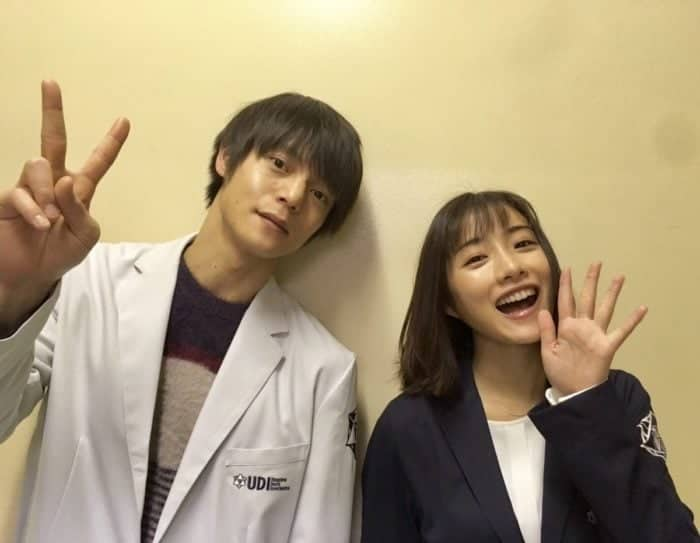

|
|
|
|
叫我只能選一部劇來推薦實在太困難了，但若要推薦一種影集種類，絕對非「情境喜劇 （sit-com）」 莫屬。人生實屬困難，看劇就是要圖個開心，圖個快樂對吧？以下為各位推薦三部精心整理的情境喜劇， 閒暇時候適合看，被上司罵時適合看，被共事夥伴雷到氣到時更適合看。靠著這些令人捧腹大笑的影集， 我也走過了許多無力的時刻，也靠著這些劇提昇了不少英文能力，讓我可以順利跟外國朋友交流。
在紐約布魯克林99分局中，這裡的警員們都各有其獨特的世界觀，這創造出了荒謬又好笑的辦案環境。 如主角Jack是一位凡事都能以最有趣最快樂方式看待的天才員警，Amy是做事謹慎又好勝的聰明女警， 而Boyle是一位對美食有獨特執著的小暖男，對於成為Jack的best buddy有非常深的執念。這齣劇非常好入口， 從這群各有特色的員警看出去的世界十分有趣，看這部劇時，我總是時而捧腹大笑，時而淚流不止， 情緒反差極大。
這算是我認真接觸的第一部美劇，講的 是一位千金大小姐Caroline因為父親長久以來的詐騙案件被揭發， 而流落布魯克林街頭 (沒錯，又是布魯克林)，在這裡與身兼數職，強悍卻溫柔的Max相遇，並因緣際會成 為室友及事業上的夥伴，開始了他們自己的cupcake business。這部劇雖然有許多爭議，有人說他黃色的 成分太多，也有人說他有人說他黃色的成分太多，笑點都十分低俗不入流，也有人說她的笑點太刻意，都是 由罐頭笑聲組成的，實則毫無內涵。但對我而言，我看到的是我所嚮往的友情模樣，我所希望成為的那種人 ，外表看似強悍，內心其實非常溫柔，也非常體貼。當時剛看完這部劇的我，產生了更多動力要將英文這個 語言學好，未來有機會更想到國外留學。
除了喜劇，我也很喜歡看以特殊行業為主角的影集。。能夠將我無緣體會的人生以戲劇的方式呈現在我面前， 並且讓我有機會一探究竟，對我來說是很特別的體驗。例如美國醫療劇The Good Doctor、日本法醫劇Unnatural 等等。每次看著The Good Doctor中擬真的手術畫面都不禁讓我頭皮發麻，但又對人體的複雜性感到十分讚嘆。 我記得有一集的主題是腦科手術，患者有一個血栓跟著血流流到腦部，若不開刀取出將會有腦死的危險。看著技巧 精湛的外科醫生們將頭骨剖開、腦膜切開，用細小的金屬工具小心的在腦袋裡試圖排解問題真的超級酷，而且越 看越覺得人類十分脆弱，但脆弱的同時又比我們想像中強大。人們因為各式各樣的原因受傷，受傷後卻又能一點 一滴靠著神奇的人體將自己修復。看完後最大的感觸是，身體健康雖然是老掉牙。但是，這真的是人生活在這世 上最重要的事，沒有之一。
若說起我這輩子最不後悔做的一件事，認識Unnatural肯定是其中之一吧。這部劇訴說著以日本厚生勞動省新設立 的「UDI Lab」為背景，由法醫解剖人們在不自然死亡的屍體，並找出其真正死因的單元劇。此劇以法醫的題材包 裝各種社會議題—舉凡霸凌、過勞、男女平權、集體性侵、家庭，將每個常見的議題敘述得異常血淋淋。 以法醫解剖大體的角度切入各個案件，每一個案件都有它背後想要讓人思考或共鳴的議題—企圖掩蓋自身失誤，將加害 者渲染為被害者的醫院、以情緒勒索要求員工過勞加班的公司、不願節外生枝而草草結案的警方。看完這部劇後，我不 僅更認識了「法醫」這個職業，更能以各種不同的角度面對「生命」這項課題。其中，最讓我印象深刻的莫過於第四集： 為誰工作（誰がために働く）。認真負責的員工因公司無理的加班要求而過勞死，家庭頓時陷入經濟困難，而資方卻 連一點要為此負責的行動都沒有，看了真的感到十分心寒。